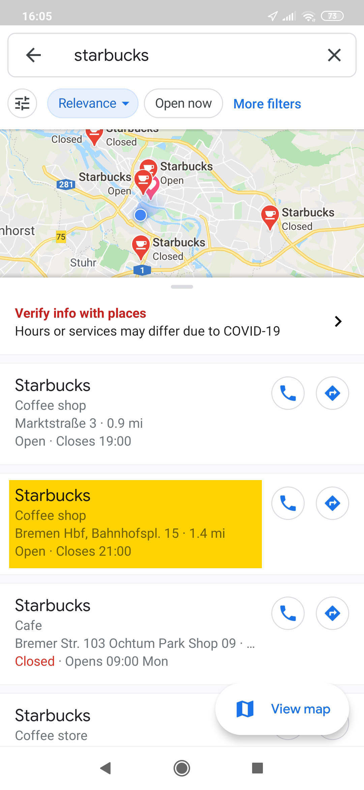
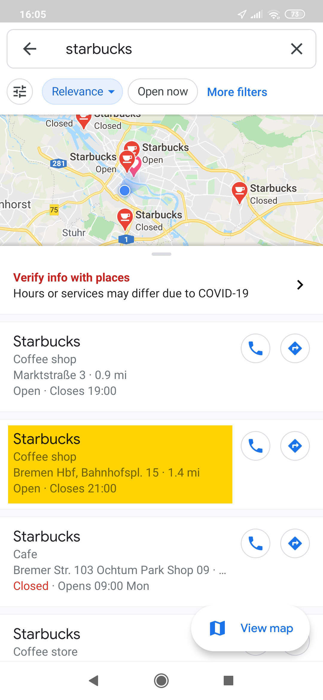
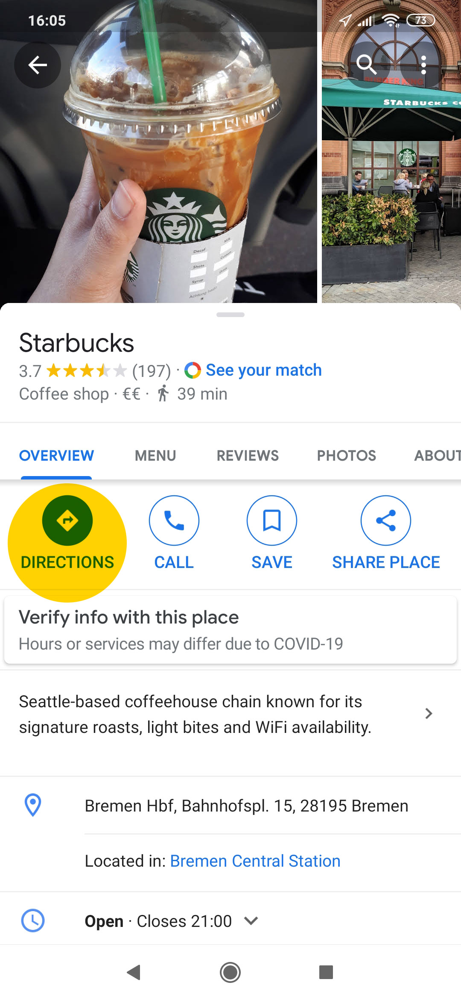
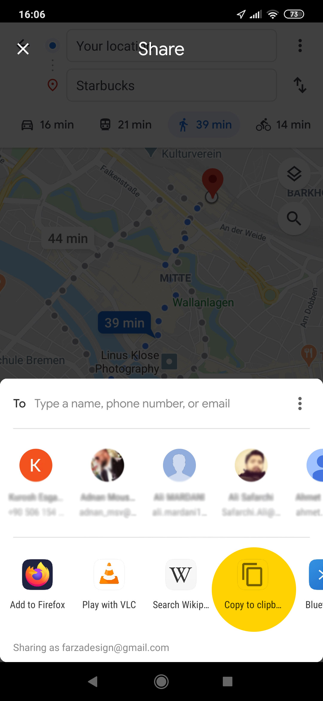
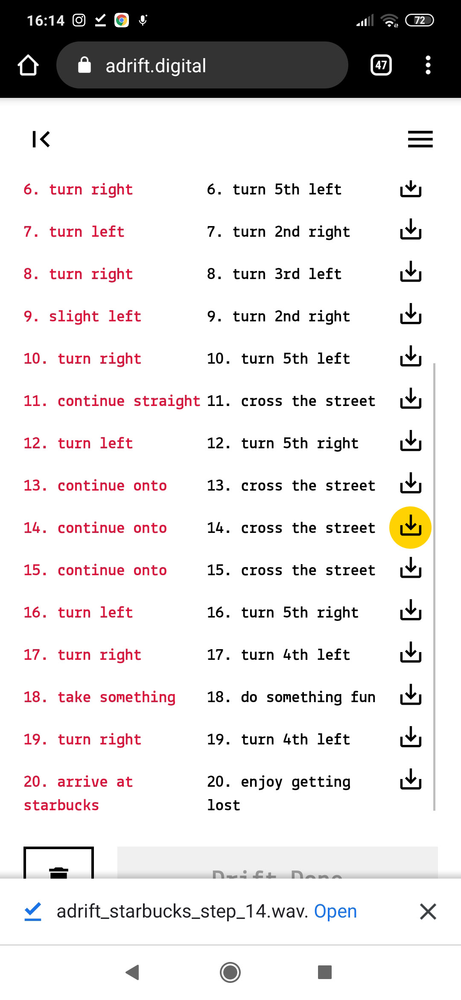
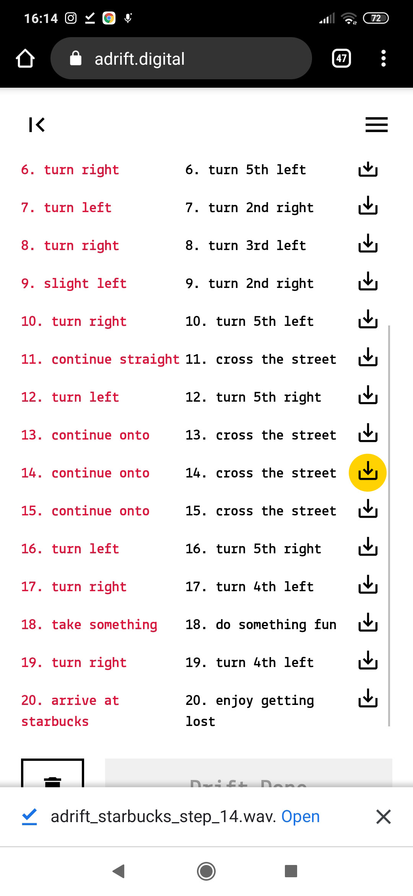
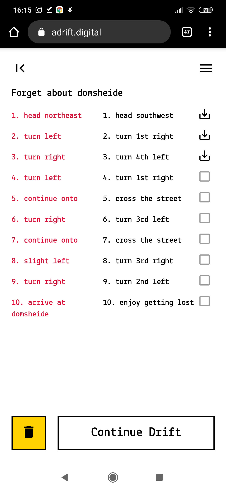
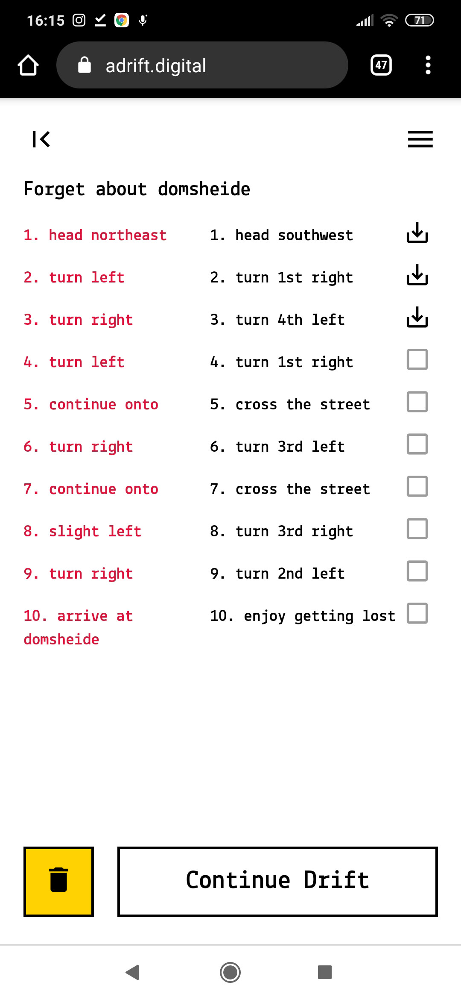

1. Begin with Google Maps. Search for a location that comes to your mind.

 

2. Find out about the direction that Maps offers to you.
3. Look for sharing the selected walking directions.

Tap on ⋮ to find the Share directions.

Among the offered apps to share the directions, find and tap Copy to clipboar.
4. Open adrift.digital and tap on ＋ to start.

5. Paste the shared directions (copied to clipboard) either by touching and holding on the text editor or tapping on the Paste utton to the buttom right.
If you haven't done all the stepps before you can paste a sample directions text by tapping on the button to the buttom left.
6. After pasting the directions text, tap on the Get Lost.

Btw, you can also type a simple Maps direction text manually :) The image shows a simple acceptable syntax.

7. After previewing the new directions text, tap on the Start Drift to start drifting in the city.

8. Follow the directions, answer the questions at each step by talking with your friends about issue and the surrounding. Have fun and follow your intuitions.
Record your voice/talks by tapping on the Record button (circle).

Stop the recording session by tapping on the Stop button (square).

Before tapping the Next button in order to proceed, you can download your recording by taping on the download button. This is helpful if you desire to perform another recording, as the page saves only the latest recording.


9. Tap on Finish button at the final step. The directions and recording stuff are done, yet continue to your drift, discovery and imagination.

On the preview page you can download all the recording you've done so far.
 

On the first page, you can see the drifts performed both compelted and uncompleted ones. Tap on any of them to preview the completed steps, download the recordings and delete the drifts.
 
